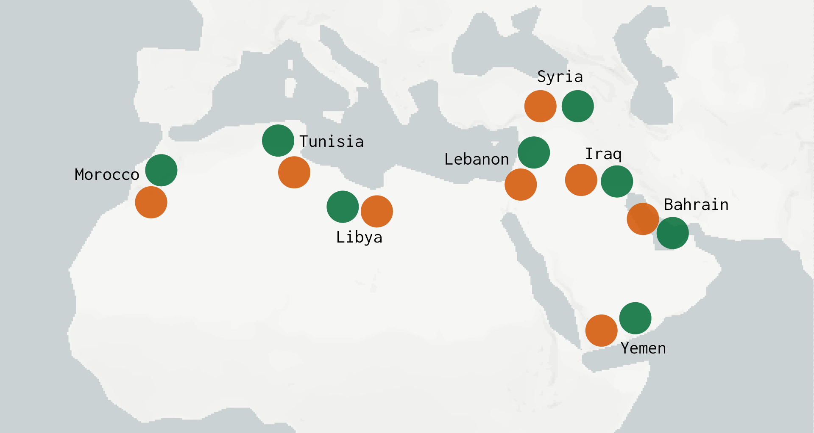
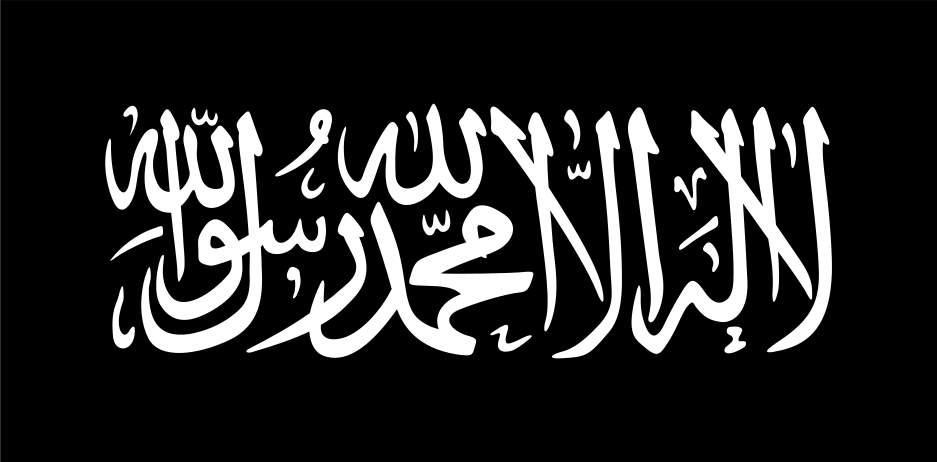
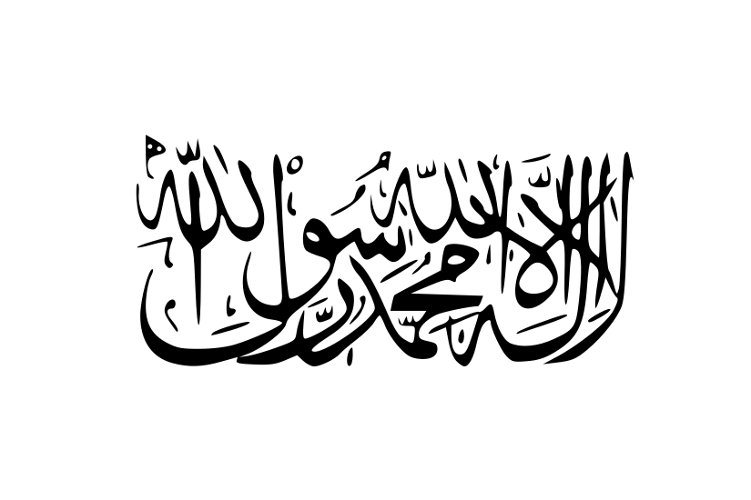
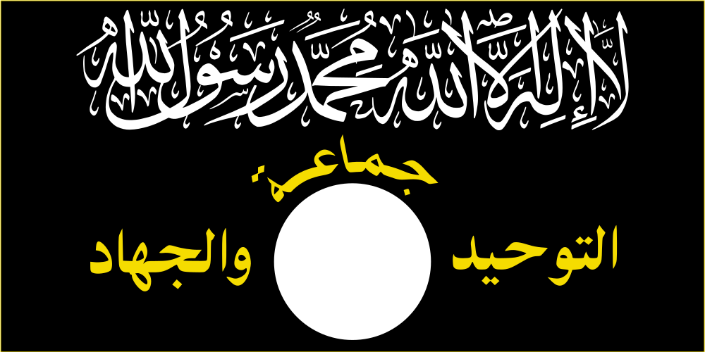
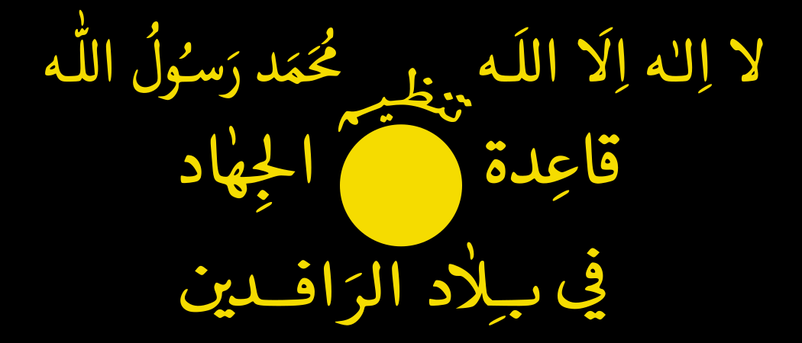
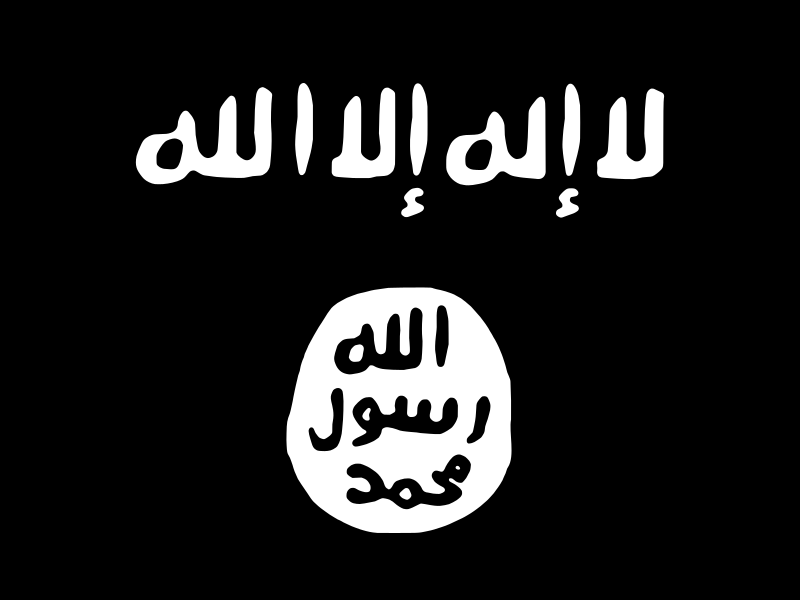

Refugees are not terrorists.
They are often the first victims of Terrorism.
Why do people leave their lives behind?
Afghanistan a prolonged victim of multiple wars, had most of its people leave behind their home.
Over the years, millions of Afghanis have lost families, to war and this number is only rising:

Syrian civilians have been caught in the civil-war onslaught, trapped between the government forces and terrorist-groups, with a rapidly rising number of refugees and casualties:
{1,39,69,58,47,44}
In African countries, a clash of ethnic-divisions, such as Tutsis and Hutus have resulted in brutal massacres. One instance is Ethiopia where nearly 50,000 people were killed.

What caused these wars?
Unrest in countries have primarily existed due to religious reasons, power struggles and resources. But, are there factors that acted as catalysts, accelerating these conflicts and propelling them to devastating wars. In turn, leaving millions homeless and on a terrifying journey, in search of new hope.
1. Cold war between the US & USSR
After World War II, there remained 2 powerful nations: US and USSR.
Germany was the first battleground of the cold war. USSR wanted to prevent Germany from invading Russia so they invaded eastern European countries, to create a communist-buffer between USSR and Germany.
US started with Containment to stop the spread of communism. US wanted a free-market oriented Europe and started expanding its markets in France and Japan. Soviets saw this growth of Capitalism as a threat to their Communist rule.
Nuclear arms race
Both US and USSR developed nuclear arsenals. The stockpiles were so big that US and USSR adopted a strategy deemed “MAD”, i.e., Mutually Assured Destruction. Both nations were capable of the extinction of our species. The cuban missile crisis was as close as possible that both nations came to the brink of a nuclear war. As a result, this situation had prevented direct conflicts between US and USSR and causing Proxy wars.
After Korea and China became communist,US feared the domino effect. i.e., more and more countries adopting communism. Vietnam turning communist would be a threat to Japan, which US had helped turn into a Capitalist ally. Soviets assisted the North-Vietnamese communist army while US backed South-Vietnam during the Vietnam-war.
For instance, the Middle-east Asia:
US executed several operations to secure oil reserves.
CIA engineered a coup
to overthrow Iran’s democratically elected PM after he’d tried to nationalize Iran’s oil industry.
USSR invaded Afghanistan and US backed the terrorist-group known as the Mujahideen, leading to the Soviet war in Afghanistan. However, after the Soviets withdrew, the Mujahideen morphed into other terrorist-groups, such as: Al-Qaeda and Taliban.
This led to the birth of the 3 worlds:
- First world - US, western Europe and places that embraced Capitalism and democratic govt
- Second world - Soviet union and other Warsaw pact nations
- Third world - All other countries
However, Soviet Socialism did not prove to be a viable alternative to Industrial Capitalism as state-run economies did not fare well as private enterprises.
Soviet-policies such as: collectivized agriculture hindered production and led to famine, suppression of traditional-cultures and made the people angry. Eventually, USSR liberalized its policies which led to less-censorship and more openness to the west. Communism started to collapse and finally resulted in the end of cold-war in the 1980s.
Soviet-policies such as: collectivized agriculture hindered production and led to famine, suppression of traditional-cultures and made the people angry. Eventually, USSR liberalized its policies which led to less-censorship and more openness to the west. Communism started to collapse and finally resulted in the end of cold-war in the 1980s.
2. Proxy-wars in the Middle-east
Meanwhile, in the Middle-east, Shiites and Sunnis have had a power-struggle from long time.
Saudi Arabia is prominently a Sunni-population while
Iran is prominently Shia.
Saudi Arabia forged an alliance with the US, owing to its massive oil-reserves.
Soon after, US staged a coup in Iran, replacing the PM with Shah with a goal to transform Iran into a secular westernized country.
However, this led to the Iranian-revolution, where the Iranians overthrew the Shah. Tensions arose, as the Iranian revolution terrified Saudi Arabia. What if their new leader would even inspire Saudi population to rise against the Saudi govt.
Iran began exporting its revolution by helping Shia groups, around the world, to overthrow governments in Iraq, Afghanistan and Saudi Arabia. Saudi-Arabia bolstered its alliance with US and other gulf monarchies to form the GCC.
Iraq under Saddam Hussein’s Sunni-regime invaded Iran, taking advantage of the Iranian revolution. When Iran started to win, Saudi Arabia came to Iraq’s support by providing money, weapons and logistical help. Nearly a million people had died.

US invaded Iraq and overthrew Saddam Hussein. Neither Saudi Arabia and Iran did not want this to happen, as Iraq was a buffer between the 2 nations. Without a govt in Iraq, armed militias took control. Shia and Sunni radical groups emerged. Sunni militia proxies were backed by Saudi Arabia while Shia militia proxies were backed by Iran. Iraq became the ground for a proxy war, with Iran and Saudi Arabia supporting opposite-sides.
Following the Arab-Spring, Saudi Arabia, the ultimate status-quo power did not want their people to revolt against the government while Iran was anti status-quo power and wanted to overthrow the regional-order, from ages.
These proxy wars have led to unpredictable situations, such as:
- Tunisia, where Saudi backs the Tunisian dictator while Iran backs protestors.
- Bahrain, Iran backs Shia-leaders while Saudi sends troops to the govt.
- Yemen, Saudi military is helping the central government fight the Iranian proxy group: Houthi rebels
- and even Syria, where Iranian military is working with Syrian militias and Hezbollah to fight the Saudi-backed Sunni militant group ISIS.

3. Rise of Terrorism
During the cold war, after the soviet invasion of
Afghanistan
, martyrs joined from everywhere to form the Mujahideen.

US had trained, armed and funded the Mujahideen to fight the Soviets. Mujahideen later split to form the Taliban


and Al QaedaOnce the war ended in 1989, Al Qaeda grew into a global network. In 2001, Al Qaeda attacked the World trade center in US, claiming to avenge US’ actions, eventually leading to US invading Afghanistan.
After US invaded
Iraq
and toppled Saddam’s dictatorship, Iraq was left unstable and Iraqi soldiers joined the insurgency.
Al Qaeda, led by Osama bin laden merged with Abu Musab al-Zarqawi's Jama'at

to form Al Qaeda in Iraq (AQI)
AQI grew in large number and primarily attacked Shia, sparking a Shia-Sunni civil-war. However, US drone attacks severely weakened AQI.
In 2011, US withdrew from Iraq as it finally seemed stable. However, after Arab springs,
Syria’s
dictator cracked down on protestors. Jihadists were released from prison against rebels.
AQI changed to Islamic State of Iraq (ISI), grew tremendously in number and expanded to Syria where it became Islamic State of Iraq and Syria (ISIS)
By 2014, 1⁄3rd of Iraq was conquered by ISIS.[map]

By 2014, 1⁄3rd of Iraq was conquered by ISIS.[map]
These catastrophic events led to the Birth of Refugees.